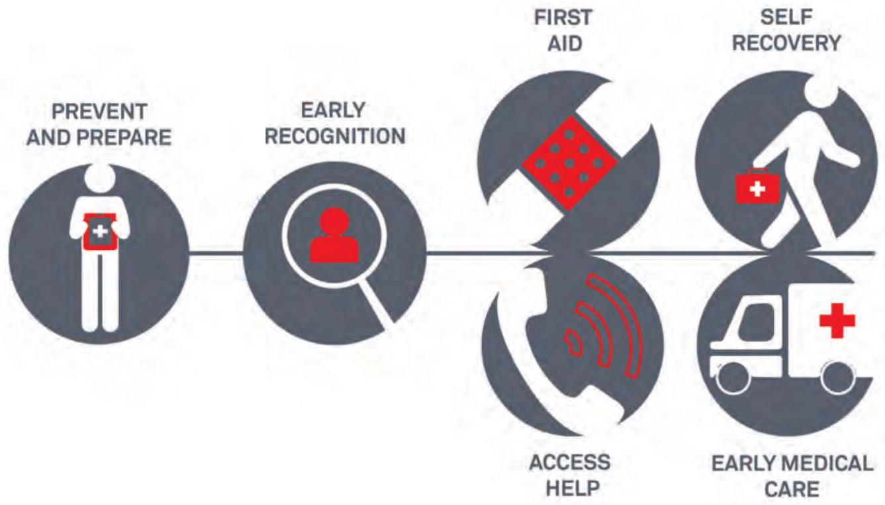
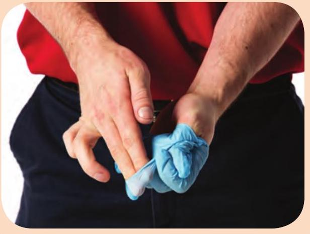
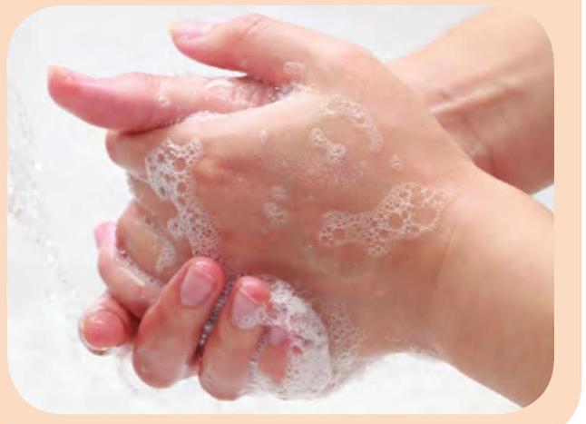
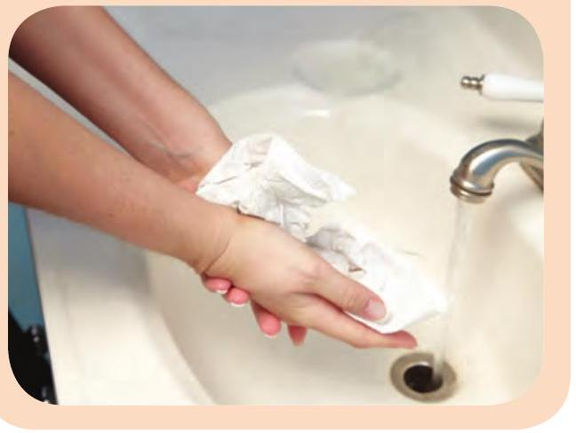
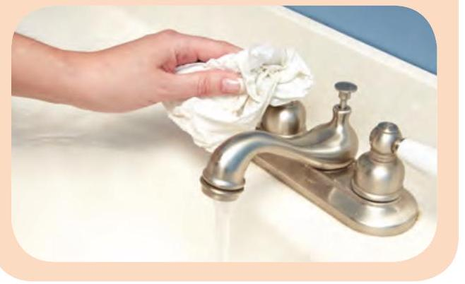

Responding to Emergencies
Preparing to Respond

First Aid Kit
Keep a well-stocked and regularly inspected first aid kit in your home, car, and workplace.
Willingness to Act
Sometimes people don't want to get involved in an emergency. The four most common reasons are:

- The Bystander Effect: "Someone else will look after the person." Never assume that someone will take action. Offer to help in any way you can.
- Unpleasant injuries or illnesses: "That makes me feel sick!" Close your eyes or turn away for a moment to calm yourself, then deal with the situation.
- Fear of catching a disease: "I don't want to get sick!" Taking simple steps, such as wearing gloves, will limit the risk of catching a disease.
- Fear of doing something wrong or causing more harm: "What if I make the person worse?" The most harmful thing you can do is nothing at all.

Legal Issues Around First Aid
First Aiders must:
- Get permission, if possible, before giving care.
- Give only the care they were trained to provide.
- Continue giving care until another trained person takes over, they are too exhausted to continue, the scene becomes unsafe, or the person's condition improves and care is no longer required.
Getting Permission to Help
You must get permission (consent) before giving care.
- For an unresponsive person, the law assumes you have permission.
- For a young child without a caregiver, provide care.
- If a person refuses care, call EMS/9-1-1.

Duty to Report Child Abuse or Neglect
Every adult in Canada has a legal duty to report child abuse or neglect, even if it is not confirmed. Information around the specific how-to-report details can be found in your jurisdiction's child protection act, but the duty to report is uniform in all acts. If you think a child is being harmed, then a report to child protection and/or the police needs to occur.
Chain of Survival Behaviours
The Chain of Survival Behaviours is a series of actions that, if integrated together, will help ensure a positive outcome for an ill or injured person.
Your Role as a First Aider
- Recognize the emergency.
- Protect yourself and others.
- Access help (one of the simplest and most important ways of providing first aid).
- Act according to your skills and training.
The Emergency Medical Services System
The emergency medical services (EMS) system is a network of community resources and trained personnel organized to give emergency care in cases of injury or sudden illness.

When to Call EMS/9-1-1
Call EMS/9-1-1 if there is a danger to you or others or if a person:
- Is not easily accessible.
- Is unresponsive or has an altered mental state.
- Is not breathing normally.
- Has persistent chest pain or pressure.
- Has life-threatening bleeding.
- Has a seizure.
- Has a head, neck, or spinal injury.
- Has an apparent mental health crisis.
After an Emergency
Being involved in an emergency and providing first aid can be stressful. After the emergency is resolved, you may have lingering feelings such as uneasiness, doubt, anxiety, and fear. It is often helpful to talk to somebody about the situation.
Consider seeking professional help (such as from your family doctor or mental health professional) if you experience any of the following for more than two weeks after the emergency:
- Crying fits or uncontrollable anger
- Trouble eating or sleeping
- Loss of engagement with former interests
- Feelings of guilt, helplessness, or hopelessness
- Avoiding family and friends
- Ignoring daily tasks, such as going to work
Lowering the Risk of Infection
Equipment Precautions
"Personal protective equipment" ("PPE") are items that protect you from contact with germs. You should always use some type of barrier device when giving first aid.

Removing Gloves
- Touching only the outer surface, pull the glove off your hand, form it into a ball, and hold it in the palm of your gloved hand.
- Insert your fingers under the rim of the glove on your other hand. 
- Pull the glove off the hand, trapping the balled glove inside, and discard appropriately.
- Wash your hands properly. 


Handwashing
- Take off your jewellery, wet your hands, and then apply soap.
- Rub your hands together for at least 30 seconds and rinse. 
- Dry with a towel.
- If you are in a public washroom, turn the faucet off using the towel. 


If handwashing facilities are not available, use an alcohol-based hand sanitizer to clean your hands. Clean under your fingernails by rubbing them against the palms of your hands. Be sure also to scrub your palms and wrists, the skin between your fingers, and the backs of your hands.